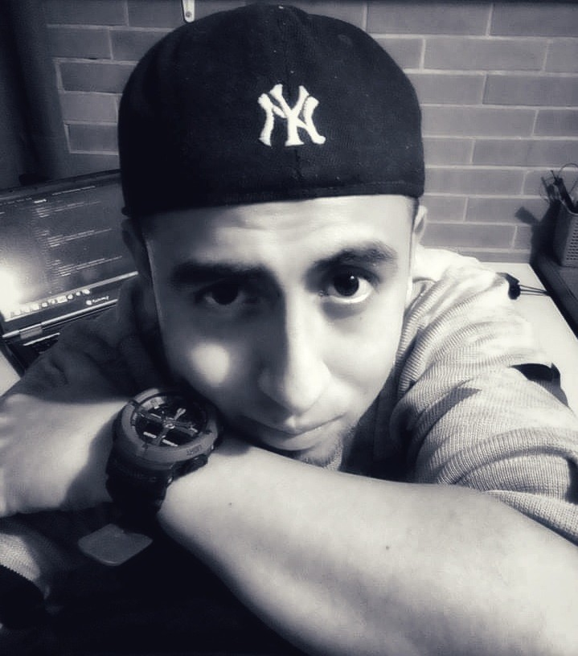
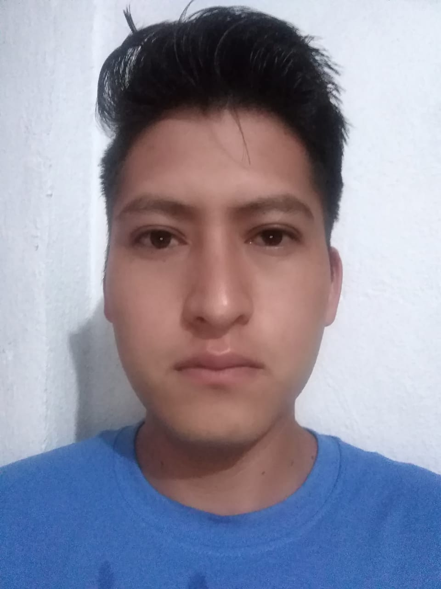

César Estrada
Fullstack Developer
Me encanta contribuir y ser proactivo

Eduardo Valdez
Fullstack Developer
Soy un gran apasionado de la tecnología
🖥 📲

Iván Kasuo
Fullstack Developer
"En busca de conocimiento y superar los desafios"

Javier Cortés
Fullstack Developer
Me encanta aprender y contribuir al mundo 🐱🏍 proactivo 😎 Estudiante de ingenieria de desarrollo de software ⚙

Juan José
Fullstack Developer
Soy una persona persistente, y hacer cosas inovadoras para el mundo, amante de la musica y del Codigo.